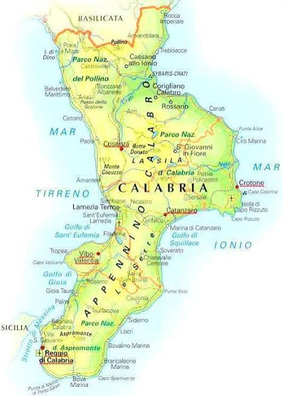

La Calabria (AFI: /kaˈlabrja/; Καλαβρία (Kalavrìa) in grecanico; in arbëreshë Kalabrì; in occitano Calàbria), ufficialmente Regione Calabria, è una regione italiana a statuto ordinario dell'Italia meridionale di 1 824 059 abitanti, con capoluogo Catanzaro. L'unico confine regionale si trova a nord, con la Basilicata, a sud-ovest lo stretto di Messina, la separa dalla Sicilia, ed è bagnata a est dal mar Ionio e a ovest dal mar Tirreno. Secondo alcune teorie storiche, il termine Italia avrebbe origine in Calabria: gli antichi Greci lo usavano inizialmente per indicare l’area compresa tra i due golfi, in corrispondenza dell’istmo di Catanzaro. Abitata sin dal Paleolitico, grazie alla sua posizione strategica al centro del Mediterraneo ha visto il fiorire di numerose culture: enotria, ausonia, greca, bruzia, romana, bizantina, normanna. Quello greco rappresenta per la Calabria il periodo di massimo splendore, con la fondazione a partire dall'VIII secolo a.C. di numerose città che saranno per secoli fra le più ricche e culturalmente avanzate del loro tempo, costituendo il fulcro del territorio successivamente ribattezzato Magna Grecia dai conquistatori romani. In epoca romana è parte della Regio III Lucania et Bruttii, una regione dell'Italia augustea. Dopo la guerra greco-gotica diviene e rimane per ben cinque secoli un dominio bizantino, recuperando pienamente il suo carattere ellenico. Fiorisce il cenobitismo, col sorgere in tutto il territorio di innumerevoli chiese, eremi e monasteri in cui i monaci basiliani calabro-greci si dedicano alla trascrizione. A partire dal periodo bizantino la Calabria diventa la più importante area d'Europa per la produzione e lavorazione della seta. Nell'XI secolo, l'avvento dei normanni dà il via a un lento processo di latinizzazione della regione, che inizia a seguire le sorti del resto del Meridione: farà parte del Regno di Sicilia, del Regno di Napoli e del Regno delle Due Sicilie, prima di convergere nell'Italia unita. Nell'area della Bovesia esistono ancora delle comunità di lingua grecanica, variante locale della lingua greca. Nella parte centro-settentrionale della penisola sono invece numerosi i comuni di lingua arbëreshe, variante locale della lingua albanese. Vi è inoltre a Guardia Piemontese una minoranza di lingua occitana.